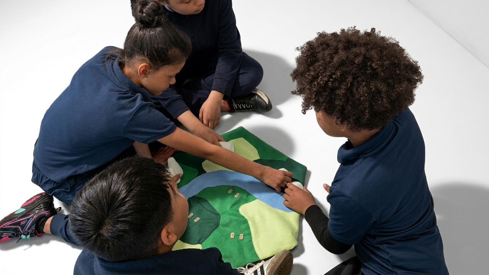
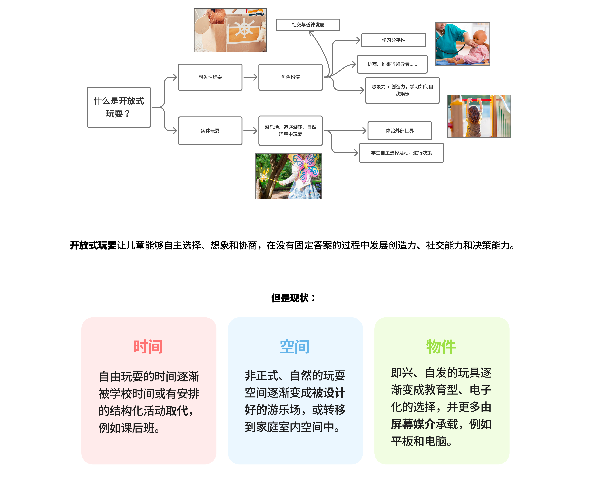
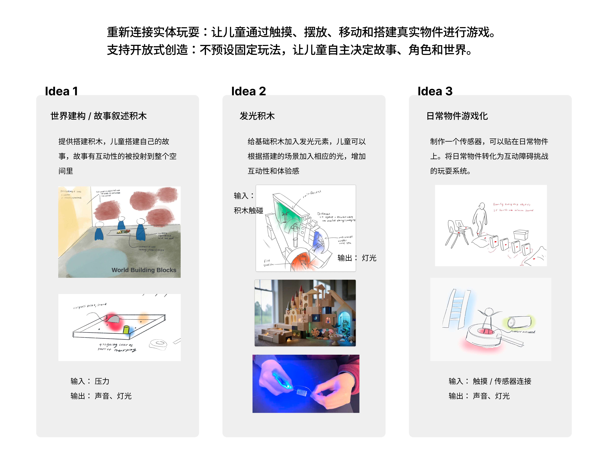
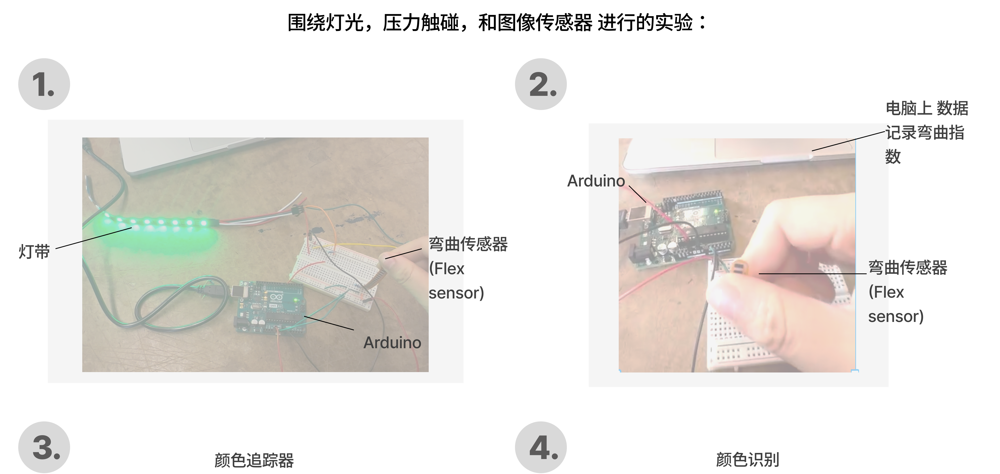
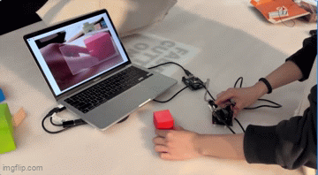
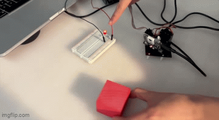
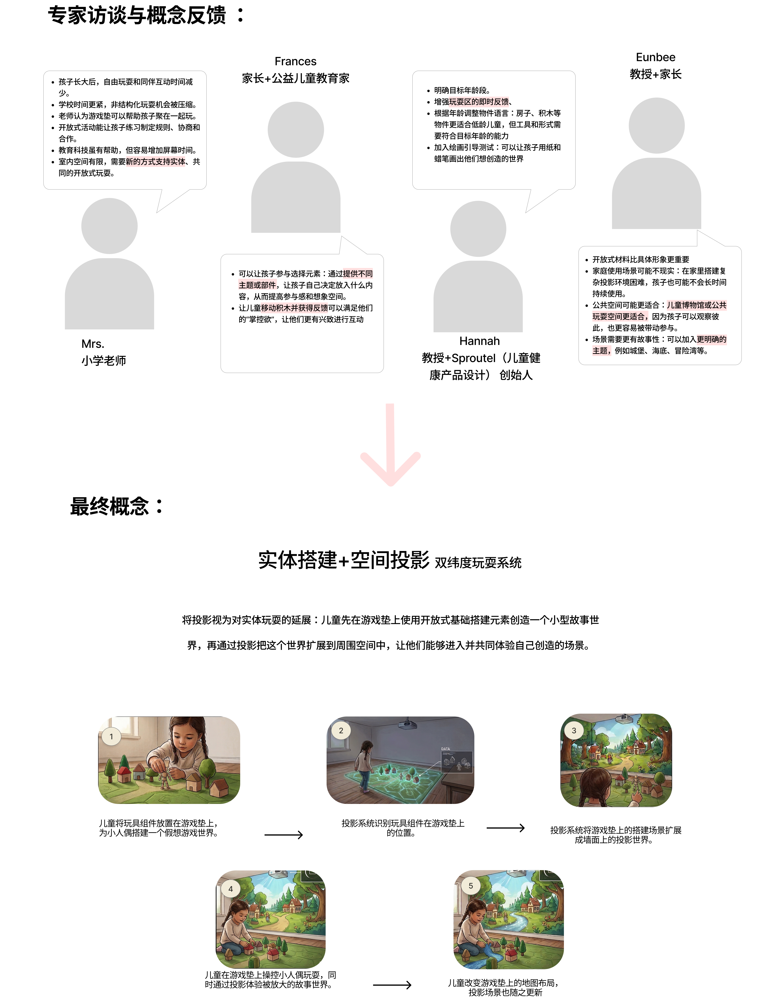

Wonder Mat (Work in Progress)
Spring 2026
Challenge:
Project description to follow.
Design:
Project description to follow.
Outcome:
Project description to follow.

1.Research and
Idea Development

Goal:Explore how offering more engaging foundational elements can encourage children’s autonomous creation, imagination, and interaction during open-ended play.

2.Prototyping Process



3.Concept Refinement
